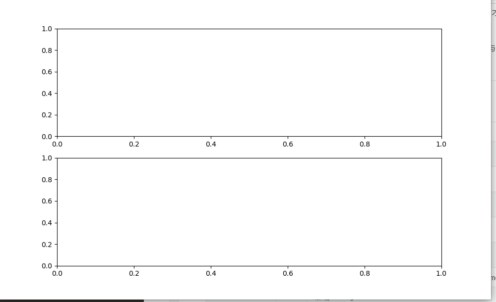
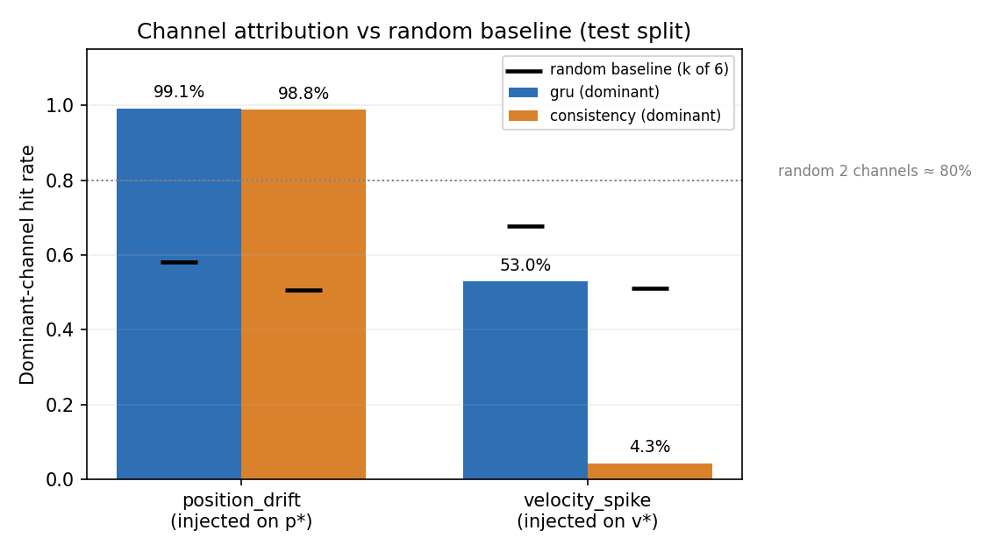

无人机遥测异常检测与 ROS2 在线诊断
本页记录一个可复现的遥测数据可靠性实验：从 AirSim 记录的飞行状态里，判断当前观测是否"自相矛盾"——位置差分与速度不符、速度差分与加速度不符，或时间戳异常。输出异常分数、阈值、报警与诊断消息，不下发任何飞控指令。

上面的动图不是摆拍：telemetry_diagnostics 节点订阅回放话题，逐条计算分数并发布 /uav/anomaly_score，看板窗口把这 361 条消息画成曲线。第 6.5 秒左右分数从 −4 跳到 +8，越过阈值，报警位从 0 变 1。
1. 任务定义与边界
输入：9 个通道的飞行状态——位置 px,py,pz、速度 vx,vy,vz、加速度 ax,ay,az，以及源时间戳与到达时间。
输出：每条观测一个异常分数（logit）、阈值、alarm 布尔、原因码、数据有效性与模型就绪状态。
边界：
| 不做什么 | 原因 |
|---|---|
| 不输出控制指令 | 只做诊断，不参与飞控，没有失效保护 |
| 不识别"真实传感器硬件故障" | 位置漂移、速度偏置、冻结、丢包都是软件观测层注入 |
| 不重复导航/避障/轨迹预测 | 那是 PPO、YOLO、状态预测几个项目的事 |
三个设计取舍：
| 取舍 | 选择 | 理由 |
|---|---|---|
| 学什么 | 跨通道一致性残差，不学具体航迹 | 航迹千变万化，而"位置导数应等于速度"永远成立 |
| 谁负责规则 | 时间戳冻结/缺包交给规则，网络不背这个锅 | 规则零成本且 100% 可解释，混进网络只会让归因变模糊 |
| 阈值怎么定 | 正常验证分数的 99.5% 分位数 | 不用测试集调参，保证最终测试是"一次性的" |
与相邻项目的界限：上游的飞行状态预测（PR #121）预测未来轨迹；本项目判断当前数据是否自洽。两者可以串联，但本项目不依赖它，prepare 之后即可独立运行。
2. 运行环境与快速开始
2.1 环境
| 项 | 配置 |
|---|---|
| 系统 | Ubuntu 20.04.6（VMware），6 核 / 8.5 GB |
| ROS | ROS2 Humble，在 20.04 上源码编译（/opt/ros/humble，Python 3.8）；官方二进制目标是 Ubuntu 22.04 / Python 3.10，本机没有 ros-humble-* deb |
| 深度学习 | PyTorch 2.4.1+cpu |
| 可视化 | Tk + matplotlib（不用 RViz2，本机缺 Ogre） |
2.2 安装与自检
cd ~/ros2/src/air/telemetry_diagnostics
source /opt/ros/humble/setup.bash
/usr/bin/python3 -m venv --system-site-packages ~/uav_prediction_env
source ~/uav_prediction_env/bin/activate
python -m pip install -r requirements.txt
bash main.sh doctor
bash main.sh build
doctor 检查 13 个模块（含 launch_ros 依赖的 lark），打印实际解释器并写 artifacts/environment.json。
常见故障：launch_ros: No module named 'lark' → 在本模块目录、已激活的环境中重跑 pip install -r requirements.txt。不要跳过检查硬上。
2.3 最快演示
python main.py prepare # 解压语料并生成 70 个开发场景
python main.py build
bash main.sh demo # 回放，约 28 秒
另一个终端（同一环境、DISPLAY 可用）：
python main.py dashboard
也可以一次启动：
source install/setup.bash
ros2 launch telemetry_diagnostics main.launch.py \
model:="$PWD/models/consistency_42" csv:="$PWD/sample/observations.csv" plot:=true
演示约 18 秒仿真时间加启动等待，脚本自动退出并清理子进程。sample/evaluation_only.csv 不会送给诊断节点——避免"演示数据泄漏进评估"。
3. 数据与实验设计
3.1 语料
assets/flight_corpus.zip 含 50 段真实飞行（AirSim Blocks 场景记录）：
| 批次 | 段数 | 用途 |
|---|---|---|
| 原始 | 30 | 20 训练、5 验证、5 旧原型测试（不参与新版训练） |
| 100–109 | 10 | 先用于诊断冻结的旧模型；暴露泛化问题后，100–105 进训练、106–109 进验证 |
| 200–209 | 10 | 新模型冻结之后采集，最终测试，未用于训练或阈值选择 |
新版训练 26 个原始片段、验证 9 个片段。最终测试 10 段共 3,610 条状态，零飞行中碰撞。
3.2 两套场景，不要混用
| 数据路径 | 场景数 | 强度 | 用途 |
|---|---|---|---|
data/prepared |
70 | 0.3（训练/验证）、0.6（开发测试） | 训练、验证、21 项单元测试 |
data/final_raw → 210 个场景 |
210 | 0.03 / 0.1 / 0.3 | 最终指标（第 7 节全部数字） |
prepare 只生成前者（打印 Prepared 70 scenarios）；第 7 节的结果来自 evaluate 读取 data/final_raw 后现场派生的 210 个场景。两套强度不同，数量与指标都不能互相引用。
data/final_raw 不入库：这 10 段 final 飞行由 collect_holdout.py 在 AirSim + Unreal 上现场采集，data/ 整个目录在 .gitignore 里。所以干净克隆上 python main.py evaluate 会在数据检查处退出——它校验的是「有 10 段 final 数据」，不是模型或代码有问题。想核对第 7 节的数字，直接看已入库的 results/final/summary.json；要重新生成，得先用 AirSim 重跑一遍 collect_holdout.py。
3.3 异常注入
最终测试把 10 段干净飞行各自派生出异常变体：
| 类型 | 强度 | 说明 |
|---|---|---|
| 平滑位置漂移 | 0.03 / 0.1 / 0.3 m/s | 三轴分别注入，强度表示最大漂移斜率 |
| 平滑速度偏置 | 0.03 / 0.1 / 0.3 m/s | 三轴分别注入，强度表示最大偏置 |
| 冻结 | — | 保留旧源时间，值不变 |
| 丢包 | — | 发布端跳过该记录，接收端按到达时间判断 |
合计 200 个异常事件 + 10 个正常场景（results/final/manifest.json 共 210 条）。异常使用平滑起止，没有第一版的硬恢复跳变。
注意：这 200 个事件来自 10 段真实飞行的变体，不是 200 次独立飞行。所有区间统计都按"每个场景一个事件"计算。
3.4 为什么不用随机划分
若按窗口随机划分，同一段飞行的相邻窗口会同时出现在训练与测试里，模型只要记住"这段航迹的形状"就能作弊。本实验按完整飞行片段分组，再在片段内切窗口。
4. 计算原理
4.1 跨通道一致性残差
对相邻两条观测 （时间差 ）：
两个残差各 3 维，拼成 6 维：
物理含义：位置的差分应当等于速度的中点值；速度的差分应当等于加速度的中点值。正常飞行里两者都接近 0，漂移或偏置会让残差系统性偏离。
不在 s 之内时丢弃该窗口——太短无法差分，太长说明中间丢包。
4.2 尺度归一与保号对数
训练集正常样本给出每个通道的尺度 ，再做保号对数变换：
保号是为了不丢失"偏高/偏低"的方向信息；对数是为了压缩大残差的动态范围，让网络不被少数尖峰主导。
4.3 时序模型
取最近 8 个残差向量组成序列 ：
隐藏单元 16，参数量 。输出 是 logit，不是概率——阈值也定义在同一尺度上。
4.4 训练目标
正常样本记 0，注入异常样本记 1：
20 轮，按验证集 BCE 选模型（不是按准确率，避免阈值未定时的偏置）。
4.5 阈值与报警
报警需要连续 3 次 ：
单次越阈值不报警，是为了压掉尖峰引起的误报；代价是延迟增加约 2 个采样周期（本实验为 0.1 s 量级）。
4.6 事件级指标
- 检出（TP）：异常区间内新出现的报警；
- 假阳性（FP）：正常时段新出现的报警；
- 异常发生前就已持续的报警不算检出（否则一直报警就能刷满分）；
- 延迟只对检出事件统计；漏检单独报。
正常误报率按分钟归一：
只用 10 个唯一正常场景，避免变体前缀重复计数。
5. 算法流程
5.1 总体流程
50 段真实飞行] -->|prepare: 校验 SHA256| B[开发场景 + 注入变体] B -->|按片段分组| C[训练 26 段 / 验证 9 段] C -->|8 步残差窗口| D[训练一致性 GRU / MLP] C -->|正常验证分数| E[阈值 = 99.5% 分位] D --> E E --> F[冻结模型 + 阈值
final_protocol.json] B -->|200 事件 + 10 正常| G[evaluate: 事件级指标] D --> G D --> H[ROS2: telemetry_diagnostics] H -->|/uav/anomaly_score| I[dashboard 窗口] H -->|/diagnostics| J[标准诊断消息]
5.2 训练
输入: 训练窗口 R (8×6), 标签 y, 尺度 s, 种子
1 用训练集正常样本估计 s（逐通道）
2 变换 R → sign(r)·log1p(|r|/s)
3 打乱, batch, BCE 反传, Adam
4 每轮在验证集算 BCE, 保留最优
5 用最优模型对正常验证集打分, 取 99.5% 分位作为阈值
6 与持久化参数一起写入 models/<name>/{model.pt,config.json}
5.3 在线推理
每条 /uav/telemetry:
1 解析 JSON; 坏 JSON / 非有限值 → reason=invalid_payload, alarm=True
2 delivered=0 或源时间戳倒退 → 清空历史, alarm=True
3 Δt 不在 [0.01, 0.15] → 清空历史, reason=time_gap
4 追加残差, 只保留最近 8 条
5 不足 8 条 → model_ready=False, 不报警
6 否则打分; z>τ 且连续 3 次 → alarm=True
7 发布 /uav/anomaly_score 与 /diagnostics
规则与网络的分工写在代码里：时间戳类异常由规则直接判 True，网络只负责 model_residual。
6. 训练设置
| 超参数 | 值 |
|---|---|
| 历史长度 | 8 |
| 输入维度 | 6（3 位置残差 + 3 速度残差） |
| 网络 | GRU(6→16) → Linear(16→1)；对照 MLP(6→16→1) |
| 参数量 | 1,169 |
| 优化器 | Adam |
| 轮数 | 20，按验证 BCE 选模型 |
| 阈值 | 正常验证分数 99.5% 分位（consistency_42：1.3973） |
| 持久化 | 连续 3 次越阈值 |
| 窗口数 | 训练 143,982 / 验证 52,763 |
| 种子 | 42 / 43 / 44（部署用 42） |
7. 实验结果
7.1 总体（200 个事件）
| 方法 | 检出 | Precision | Recall | F1 | 正常误报/分钟 |
|---|---|---|---|---|---|
consistency_42（部署） |
200 | 0.617 | 1.000 | 0.763 | 2.669 |
consistency_43 |
200 | 0.766 | 1.000 | 0.868 | 1.001 |
consistency_44 |
200 | 0.704 | 1.000 | 0.826 | 3.336 |
consistency_mlp_42 |
200 | 0.833 | 1.000 | 0.909 | 2.335 |
| 仅神经网络（无时间戳规则） | 180 | 0.592 | 0.900 | 0.714 | 2.669 |
| 不要求连续触发 | 200 | 0.467 | 1.000 | 0.637 | 5.337 |
| 仅时间戳规则 | 20 | 1.000 | 0.100 | 0.182 | 0.000 |
| 同验证集校准的梯形积分规则 | 140 | 1.000 | 0.700 | 0.824 | 0.000 |
三个必须说清楚的点：
- 部署的
consistency_42是三个种子里最弱的：F1 0.763，低于 43（0.868）与 44（0.826）。当初选 42 是为了固定种子、避免"按测试集挑最好"，不是因为它最好。 - MLP 变体在所有指标上优于 GRU：F1 0.909 vs 0.763，Precision 0.833 vs 0.617，误报还更低（2.335 vs 2.669）。8 步的时序建模在这个任务上没有带来收益——残差本身已经很局部。
- 规则基线精度 100%：梯形积分规则零误报，但只检出 70%；时间戳规则零误报、检出 10%。没有任何方法在精度与召回上同时占优，这是这个任务的真实形状。

7.2 分类型与分强度（consistency_42）
| 类型 | 强度 | 检出 | Precision | 平均延迟 (s) |
|---|---|---|---|---|
| 平滑位置漂移 | 0.03 | 30/30 | 0.588 | 0.323 |
| 平滑位置漂移 | 0.1 | 30/30 | 0.612 | 0.244 |
| 平滑位置漂移 | 0.3 | 30/30 | 0.625 | 0.213 |
| 平滑速度偏置 | 0.03 | 30/30 | 0.625 | 0.512 |
| 平滑速度偏置 | 0.1 | 30/30 | 0.625 | 0.361 |
| 平滑速度偏置 | 0.3 | 30/30 | 0.625 | 0.281 |
| 冻结 | — | 10/10 | 0.625 | 0.100 |
| 丢包 | — | 10/10 | 0.625 | 0.100 |
规律很清楚：强度越大，延迟越短（位置漂移 0.323 → 0.213 s；速度偏置 0.512 → 0.281 s）。速度偏置比位置漂移更难检，因为它在残差里更"像"正常抖动。
冻结与丢包由规则处理，延迟约 0.1 s；实际 ROS2 中丢包还有 0.15 s 接收超时，不能直接把离线的 0.1 s 当成在线延迟。

7.3 种子方差
三个 GRU 种子：F1 均值 0.819 ± 0.043，误报 2.335 ± 0.982 次/分钟，Recall 恒为 1.0。
误报率的标准差接近均值的一半——单次跑的误报指标不能当作稳定值，这是本实验最该被注意的统计事实。
7.4 消融

- 去掉时间戳规则：检出从 200 降到 180（漏掉的正是冻结/丢包）；
- 去掉连续 3 次要求：Recall 不变，但 Precision 从 0.617 掉到 0.467，误报从 2.67 涨到 5.34——持久化要求是性价比最高的一行代码。
7.5 通道归因：报警时指出可疑通道
报警只说"有问题"，不说"哪里有问题"。上游在本页合入后新增了通道归因：把 6 维残差（位置差分 3 通道、速度差分 3 通道）按训练尺度归一化后分摊占比，取占比 ≥20% 的前两个作为 dominant；GRU 预测残差与一致性检测器都输出 channels 与 dominant 字段。
必须和随机基线比：dominant 最多 2 个通道，从 6 个里选，随机选 2 个的期望命中率就有 80%。基线要按每条报警实际给出的通道数逐条算，不能用一个常数。
| 检测器 | 注入类型 | 报警步数 | 命中率 | 随机基线 |
|---|---|---|---|---|
| GRU 预测残差 | 位置漂移（p*） | 350 | 99.1% | 58.2% |
| GRU 预测残差 | 速度偏置（v*） | 287 | 53.0% | 67.8% |
| 一致性残差 | 位置漂移（p*） | 343 | 98.8% | 50.6% |
| 一致性残差 | 速度偏置（v*） | 348 | 4.3% | 51.2% |
本机重跑 python attribution_eval.py --detectors gru,consistency 复现了后两行：位置漂移 343 次报警、命中率 98.83%、基线 50.61%；速度偏置 348 次、命中率 4.31%、基线 51.21%。
结论分两半，差别很大：
- 位置漂移可用：98.8%–99.1%，远高于 50%–58% 的随机基线；
- 速度偏置不可用：一致性检测器只有 4.3%，比随机猜还差。恒定速度偏置在差分残差里只出现在起止边缘，平台段残差接近噪声，归因被噪声主导。

因此接口口径是：dominant 只在位置类异常上可信；速度偏置请只看 score/alarm。归因是相关性分摊，不是因果解释，也无法区分"传感器故障"与"观测层注入"。
7.6 复现一致性
| 项 | 结果 |
|---|---|
bash main.sh test |
21 项通过（4.42 秒） |
python main.py evaluate |
与随附 results/final/summary.json 一致（Precision 0.6173、FP 2.6687）；需要 data/final_raw（不入库），干净克隆上会明确报错退出 |
python attribution_eval.py |
与上游记录一致（343 → 98.83%、348 → 4.31%） |
bash main.sh demo |
361 条诊断记录（results/final_replay/ros_diagnostics.jsonl 361 行） |
| 交付 ZIP 异目录复测 | 上游记录：准备、测试、训练入口、构建、回放全部通过，最终 CSV 逐字节一致 |
8. ROS2 接口
| 话题 | 类型 | 用途 |
|---|---|---|
/uav/telemetry |
std_msgs/String JSON |
整数纳秒源时间、到达时间、9 个飞行量 |
/uav/anomaly_score |
std_msgs/String JSON |
分数、阈值、报警、原因、数据有效性、模型就绪、channels、dominant |
/diagnostics |
diagnostic_msgs/DiagnosticArray |
标准诊断等级与键值 |
/uav/replay_status |
std_msgs/String JSON |
回放完成通知 |
| 节点 | 职责 |
|---|---|
telemetry_diagnostics |
订阅遥测、维护 8 步历史、打分、发布报警与诊断 |
telemetry_replay |
回放 CSV，按源时间戳发布；丢包时真的跳过 |
dashboard |
订阅 /uav/anomaly_score，画分数与报警曲线（Tk 窗口） |
异常处理约定：
- 输入非有限值或坏 JSON →
reason=invalid_payload，输出 ERROR 诊断，节点不崩； - 源时间戳不前进 →
stale_timestamp，清空历史； - 回放结束后发
complete=true，仪表盘显示REPLAY COMPLETE； live_source.py只读仿真状态，不解锁、不起飞、不发控制。
接入其他仿真器需要同时拿到同步的位置、速度、加速度与源时间戳。只有 /uav/odom 不够——没有加速度通道时，速度残差这一半特征无法计算。
9. 源代码解析
| 文件 | 行数 | 职责 |
|---|---|---|
consistency.py |
100 | 残差、8 步窗口、GRU/MLP、在线 ConsistencyDetector |
train_consistency.py |
94 | 训练、验证选模、阈值标定 |
evaluate_consistency.py |
111 | 冻结模型的事件级评估与消融 |
report_final.py |
41 | 汇总表与三张图 |
telemetry_data.py |
100 | 语料解压、校验、场景生成 |
holdout_evaluate.py |
128 | 注入与旧版评估 |
collect_holdout.py |
186 | 真实仿真采集（唯一会控制无人机的脚本） |
ros_diagnostics.py |
133 | ROS2 推理节点 |
attribution.py |
32 | 残差通道占比与 dominant 归因 |
channels.py |
12 | 残差通道定义 |
attribution_eval.py |
118 | 归因命中率与随机基线评估 |
live_source.py |
40 | 只读实时桥接 |
dashboard.py |
74 | Tk 看板 |
check_ros.py |
49 | 独立订阅与记录 |
main.py / main.sh |
51 / 27 | 统一入口 |
五个关键设计：
残差只依赖相邻两帧。 residual() 不需要历史缓冲区之外的任何状态，在线与离线共用同一函数——这消除了"离线一套、在线一套"的经典偏差。
规则与网络分工明确。 step() 里时间戳类异常直接 abnormal=True，网络只在 reason='model_residual' 时出现。归因清楚，消融才有意义。
阈值来自正常验证集，不是测试集。 config.json 里写死 threshold，evaluate 先校验 final_protocol.json 的哈希，防止"边评估边调参"。
冻结模型有哈希保护。 final_protocol.json 记录权重与阈值哈希，重训不会自动替换部署模型——这是本实验"最终测试只跑一次"承诺的技术保证。
采集脚本与诊断脚本分离。 只有 collect_holdout.py 会控制仿真无人机，其余全部只读。安全边界写在代码结构里，而不是文档里。
10. 复现步骤
cd ~/ros2/src/air/telemetry_diagnostics
source /opt/ros/humble/setup.bash
source ~/uav_prediction_env/bin/activate
bash main.sh doctor # 13 个模块
python main.py prepare # 70 个开发场景
python main.py test # 21 项测试
python main.py evaluate # 需 data/final_raw（AirSim 采集，不入库）；缺失时会报错退出，此时请对照 results/final/summary.json
python main.py report # 三张图与汇总表
bash main.sh build
bash main.sh demo # 另开 dashboard
耗时：测试 4.0 秒，评估约 6 秒，回放 28 秒。训练另算（python main.py train --seed 42 --output models/retrained，20 轮）。
11. 局限与适用范围
- 单一场景：只有 AirSim Blocks 一段场景，正常观察时长约 3 分钟，误报率的置信区间很宽（种子间 ±0.98 次/分钟）。
- 异常是软件注入的：位置漂移、速度偏置、冻结、丢包都由观测层制造，不等价于真实传感器故障。
- 不覆盖未知异常：训练只见过这四类，遇到没注入过的故障模式，模型会给一个分数但没有保证。
- 网络不比规则强：精度上规则 100%，网络 0.62；召回上规则 70%，网络 100%。选择哪个取决于代价，本文不宣称网络更优。
- GRU 没有超过 MLP：F1 0.763 vs 0.909，时序建模在此任务上没有收益。
- 延迟不等于在线延迟：离线 0.10 s 的冻结检出，在线还要加 0.15 s 接收超时。
- 未在异机复测：所有数字来自同一台虚拟机，作者不冒充跨机器复现。
- 通道归因只对位置类异常可信：速度偏置上命中率 4.3%，低于随机基线，会误导定位。
- 不是安全组件：不参与飞控，没有失效保护，不能用于实机决策。
12. 维护说明
- 权重与阈值有哈希保护（
final_protocol.json），改模型后必须同步更新，否则evaluate会拒绝运行； - 新增异常类型要同时更新注入代码、评估分组与第 7.2 节的表；
- 阈值必须只在正常验证集上标定，不能在测试集上调；
- 图片放在
docs/img/air/telemetry_diagnostics/（仓库.gitignore忽略*.gif，只对该目录开白名单）； results/、artifacts/、build/、install/、log/都不入库；- 第一版实验（
train_evaluate.py、holdout_evaluate.py与根目录旧结果）保留作为记录，不要与新版的成绩混用。
assets/flight_corpus.zip 为自包含语料；models/ 为权重与配置；tests/ 为单元与一致性测试。
13. 参考资料
- Cho K., et al. Learning Phrase Representations using RNN Encoder–Decoder for Statistical Machine Translation. EMNLP 2014.（GRU）
- Chandola V., Banerjee A., Kumar V. Anomaly Detection: A Survey. ACM Computing Surveys, 2009.
- ROS 2 诊断消息规范：https://docs.ros.org/en/humble/Tutorials/Demos/Quality-of-Service.html
- OpenHUTB AirSim ROS 桥接示例：https://github.com/OpenHUTB/ros2/tree/master/src/air/air_teleop
说明：本项目代码、环境排查与文档在 OpenAI Codex 辅助下完成；指标来自实际运行，截图与动图来自实际窗口，未生成或伪造实验图。提交者负责检查与维护提交内容。